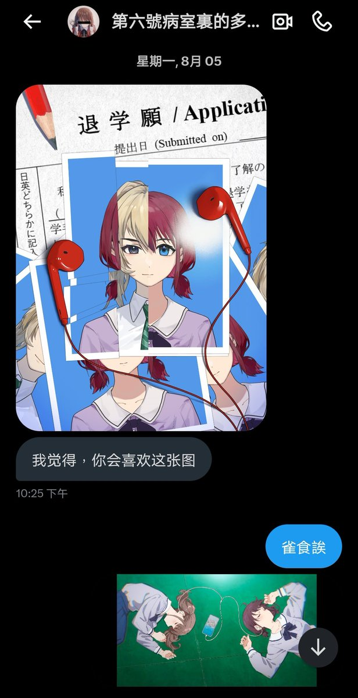

mortis
@0Yowlry
@ninaRich1991 @hai_zhong1626 🥰🥰🥰

🎤我即井芹仁菜🐴🎸
@ninaRich1991
#腫胸的互fo日記 3
謝謝你，在我最艱難的時候在我身邊會安慰我…像我這樣的小B登在你面前都感覺自己是桃香（😄大笑）
你說你想彈會「春日影」，想去法國，想著不再被束縛…
我也是多麼希望我們也可以成為自由的鳥兒…
這圖是我的手機壁紙，你也永遠地在我心裏留下了抓痕😔
TO- @hai_zhong1626 伊萬醬🥰 https://t.co/JyzNYrxDXJ